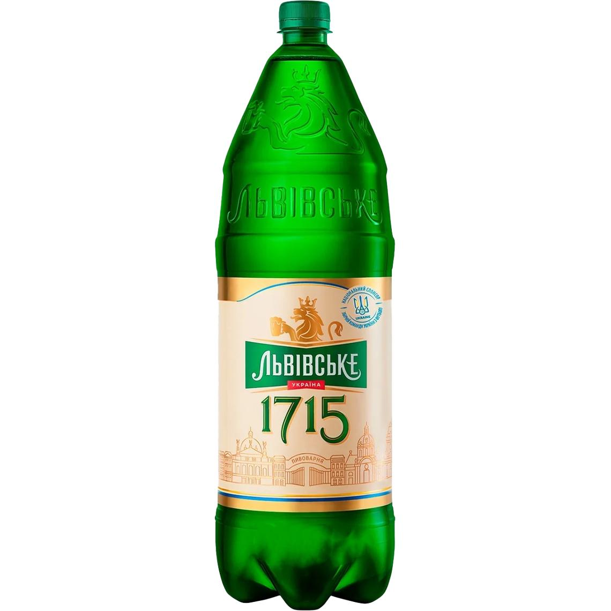

ДІЖКА ПИВА
ДІЖКА ПИВА


Дана сторінка написана за допомогою flex властивостей

Опис та характеристики
Пиво Львівське 1715 зварено за класичною рецептурою. Має чистий і багатий смак. Назва символізує дату відкриття Львівської пивоварні. Золота медаль за якість на Святі пива — 2007, 2008 в Києві. Золота медаль на XII Міжнародному конкурсі "Найкраще пиво, безалкогольний напій і мінеральна вода року — 2008 у Москві". Золота медаль на всеукраїнській акції "Свято пива" 2010 р. "Почесний кубок "за найкращий дизайн зовнішнього оформлення пива" на всеукраїнській акції "Свято пива" 2010 року. Львівське — це найстаріше українське пиво, яке почали варити монахи ще в далекому 1715 році. Смак цього славетного бурштинового напою пройшов довгий шлях крізь століття. Його полюбили ще наші діди та прадіди. Сьогодні Львівське стало частиною історії й культури нашої землі, символом епох і гордістю країни. Тому кожен із мільйонів українців, які віддають перевагу цьому легендарному смаку, немов торкаються сторінок книги часів України, сторінок її слави. Львівське 1715 — світле пиво бездоганної якості, що ґрунтується на трьохсотрічних традиціях і ще давніших таємницях львівських броварів. З вуст в уста, від батька до сина передавалися секрети стародавнього рецепта. Легкий хмільний напій із чистим солодовим ароматом і неповторним смаком стане справжнім відкриттям для всіх шанувальників класики та давніх традицій.
Країна
Україна
Торгова марка
Львівське 1715
Склад
Вода, солод, ячмінь, хміль
Калорійність
180 кДж/100г
Калорійність
43 ккал/100г
Білки
0 г/100г
Вуглеводи
⩽4.6 г/100г
Жири
0 г/100г
ГМО
НІ
Термін придатності
6 міс.
Вид продукції
ПИВО
Температура зберігання
0..+25 ºC
Вік споживача
18+ років
Ваговий товар
НІ
Походження
ЯЧМІНЬ
Міцність алкоголю
4.7 % об.
Об'єм
2.4 л
Органічний продукт
НІ
Безалкогольне
НІ
Пастеризація
ТАК
- ВНЗ: НТУУ КПІ
- Факультет: ФІОТ
- Група: ІП-22
- Прізвище та ініціали: Підпанюк В.А.
- Контактний номер: +380689ХХХХ65